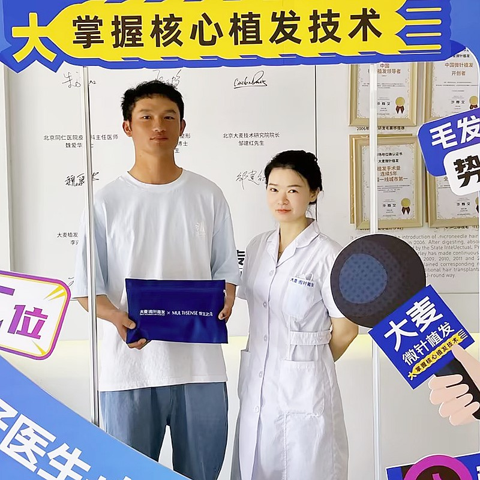

Undergoing a hair transplant is a significant decision, and understanding every step of the process helps reduce anxiety and set realistic expectations. At Barley Hospital, we guide you through each phase with complete transparency — from your very first consultation to your final results twelve to fifteen months later.
Whether you are travelling from overseas or coming from within China, our team ensures a smooth and well-organised experience. This guide walks you through every stage so you know precisely what to expect, how to prepare, and how to care for yourself during recovery.
Preparation is the foundation of successful results
Thorough evaluation of scalp condition, donor area density, and hair characteristics. Digital imaging simulates expected results. Customised treatment plan with transparent pricing.
Two weeks before: stop smoking and reduce alcohol. One week before: discontinue blood-thinning medications. Three days before: avoid caffeine and alcohol. Day before: rest and wash hair.
For international patients: airport pickup, hotel booking, and English-speaking coordinator provided. Final consultation, blood tests if needed, and pre-surgery photographs taken.
Your comfortable journey through the procedure
Arrive after light breakfast. Team reviews your plan. Surgeon marks new hairline with surgical pen. You approve the design before work begins.
Anaesthesia administered to donor and recipient areas. Brief pinching sensations (30-60 seconds). Once numb, you feel no pain.
Precision micro-punch tools extract individual follicular units. Grafts placed in preservation solution and sorted under microscopes. Takes 2-4 hours.
Surgeon creates thousands of tiny channels at precise angles and directions to mimic natural hair growth patterns.
Grafts carefully implanted using forceps or Choi pens. Each placed at correct angle, depth, and direction. Full procedure takes 4-8 hours.
Listen to music, watch movies, or nap during procedure. Regular breaks for lunch and refreshments. Detailed aftercare instructions provided.
What to expect in the first week after surgery
Head home with detailed aftercare instructions. Sleep elevated at 45 degrees. Minor oozing of clear fluid is normal. Take prescribed medications as directed. Do not touch or scratch the transplanted area.
Forehead swelling may peak. Begin gentle saline spray as instructed. Some tightness in the donor area is normal. Continue medications. Avoid bending over or lifting heavy objects. Light walking encouraged.
Begin gentle washing with prescribed shampoo. Small scabs begin forming. Swelling subsides. Most patients return to desk work. Avoid direct sun exposure and strenuous activity.
The patience phase — results are developing beneath the surface
Most scabs naturally fall off. Transplanted area may appear red and pink. Transplanted hairs begin to shed (shock loss) — this is completely normal. Follicles remain alive beneath the scalp, entering a resting phase.
Scalp appears mostly normal. Follicles rest beneath the skin, preparing for new growth. Slight redness continues to fade. Resume most normal activities including exercise.
New hair begins to emerge. Initial growth may appear thin and light in colour. Early signs that follicles have successfully taken root. Growth is sparse but gradually increases.
New hair becomes noticeably thicker and darker. Real improvement becomes visible. Density increases significantly. Many patients feel their confidence returning.
Transformation becomes truly visible. Hair density increases substantially. New hair blends seamlessly with existing hair. Hairline takes on natural, mature appearance.
Results approaching final state. Hair thickness, density, and texture continue to mature. Transplanted area looks completely natural. Style, cut, and treat like existing hair.
Hair transplant reaches final, mature state. Results are permanent — transplanted hair continues growing for life. You now have a full, natural-looking head of hair.
From first consultation to final results — every step explained

From the moment you first reach out to us to the day you see your final results, every step is carefully planned and guided by our experienced team. We believe that informed patients achieve the best outcomes, which is why we provide complete transparency at every stage.
We handle everything so you can focus on your results
The complete timeline from start to finish
Online or in-person assessment
Follow pre-op guidelines for 2 weeks
We handle pickup, hotel, coordination
Comfortable 4-8 hour procedure
3-5 days before returning to work
New hair at 3-4 months, full results at 12-15
Industry leader with proven results
Pioneer and leader in microneedle hair transplant technology since 2006
Across major cities in China, all with the same high standards
Innovative microneedle and implant pen technology for superior results
Trusted by patients from around the globe for remarkable results
Full English support for international patients throughout treatment
State-of-the-art facilities and strict safety protocols for your peace of mind
See the amazing transformations our patients have achieved


Moments captured with our satisfied patients

Happy patient showing off their natural-looking hair transplant

Grateful patient celebrating their transformation

Proud patient with their new, natural hairline

Patient showing their incredible transformation journey

Overseas patient thrilled with their results

Patient smiling with their new, natural hair

Satisfied patient with the medical team

Patient showing off their successful hair restoration
Hear from our satisfied patients around the world
"The consultation process was incredibly thorough. Dr. Chen spent over an hour mapping out my hairline and explaining exactly how many grafts I needed. On surgery day, every step from anaesthesia to graft placement was methodical and painless. I felt completely confident throughout."
"What surprised me most was how comfortable the actual extraction process was. The local anaesthetic worked perfectly, and I was able to relax and even listen to music during the 6-hour procedure. The team kept checking if I was comfortable throughout."
"The pre-operative instructions were very detailed — I knew exactly what medications to avoid, how to prepare my scalp, and what to expect on arrival. The surgery itself followed a precise timeline: anaesthesia, extraction, recipient site creation, then implantation. Each phase was explained before it began."
"The recovery process was smoother than I anticipated. The first day there was mild swelling, but the team provided a detailed aftercare schedule with specific times for spraying saline solution and taking medications. By day three, I felt completely normal. The follow-up calls from the care team were reassuring."
"I was amazed by the precision of the DHI technique. The surgeon used Choi implant pens to place each graft at the exact angle and depth required for a natural growth pattern. You can see the skill in the results — my hairline looks completely natural at 9 months post-op."
"The coordination between the surgical team was remarkable. While the surgeon created the recipient sites, four technicians were simultaneously preparing and sorting the grafts by hair count. This level of organisation means minimal time outside the body for each graft, which directly impacts survival rates. Professional from start to finish."
"I was anxious about the recovery process, but the post-operative care was excellent. The team sent me a day-by-day recovery guide with photos showing what to expect at each stage. When I had questions about swelling on day two, they responded within minutes via WhatsApp. I felt supported throughout the entire process."
Experience our modern and comfortable facilities

Our state-of-the-art facility

Relax in our premium lounge

Sterile and advanced

Private and professional

Comfortable post-op space

Welcoming entrance
Common questions about the hair transplant process and recovery
Click to copy contact information
15810155700
+86 13730143529
hairtransplant@qq.com

Everyone's hair loss journey and solution are unique due to a variety of factors. Our hair restoration experts will assist you in determining the root cause and the best solution for your hair restoration plan. If you have any questions, please ask; we are happy to assist.